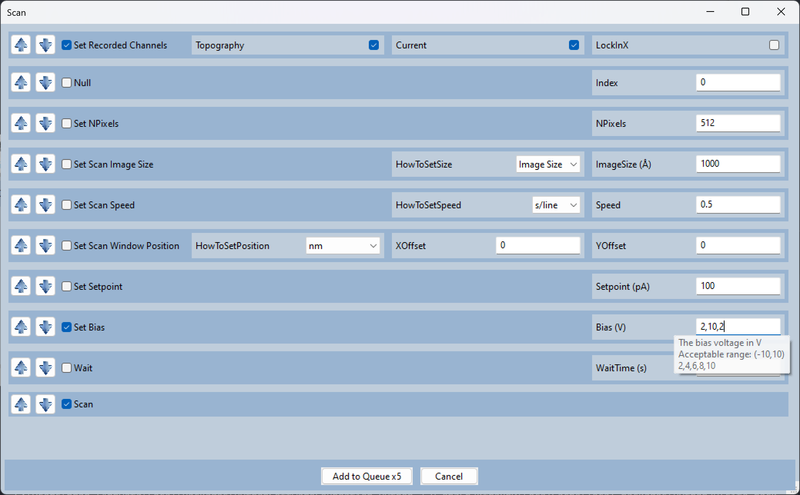
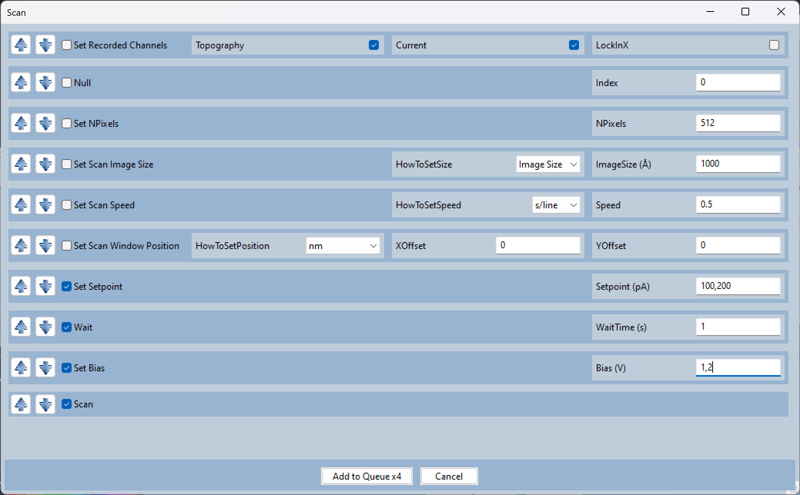
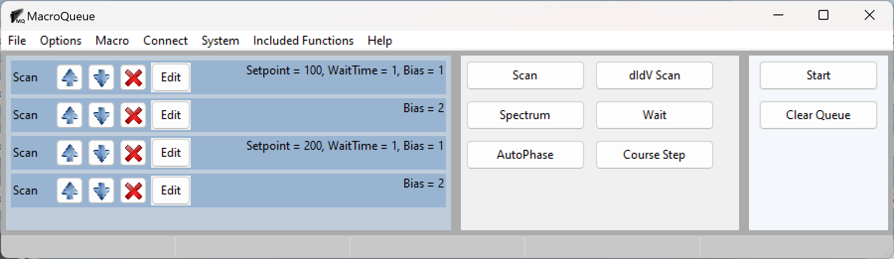

Multiple Parameters
Adding Multiple Macros
When inputing numerical parameters, you may simultaneously add several items to the queue in three ways.
You may input either 1,3,7,9 or 1;3;7;9 and 4 macros will be added to the queue, each with a different value of the parameter.
If you want the values to be evenly (linearly) spaced, you may also input 3 numbers with a format of ‘Start, End, Step size’. Writing 2,10,2 is identical to writing 2, 4, 6, 8, 10.
You may use a negative step size if you would like to have the values decrease: 0,-10,-1.
If you want to input 3 values without expanding them, you may use semicolons instead of commas. -1;1;0.1 will not be expanded.
If you want the values to be logarithmically spaced, see Logarithmically Spaced Parameters.
Which Functions will Run
It is important to note that only the functions after the expanded function are included. For example, let’s say I want to (1) change the setpoint, (2) wait some time, (3) change the bias, and (4) scan and I want 2 different setpoints and 2 different biases.
The first and third macro will have all 4 functions while the second and fourth will only change the bias and scan.
You can confirm which functions will run by pressing “edit”
For the first macro:
For the second macro:
{kind=link}
{kind=link}